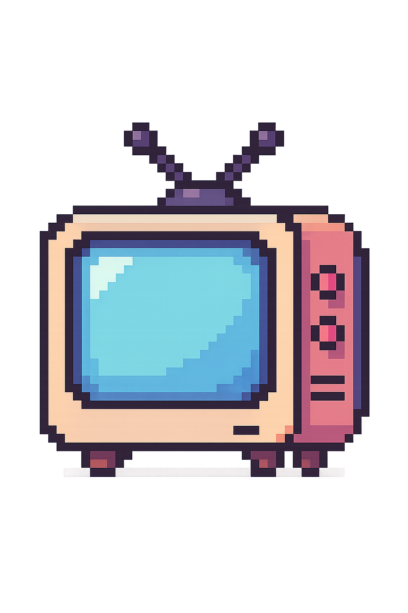
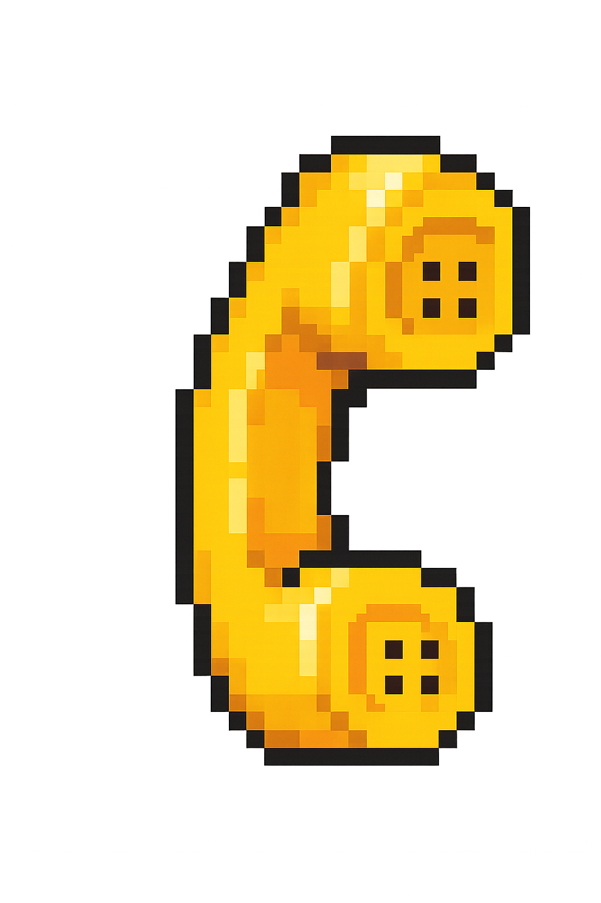
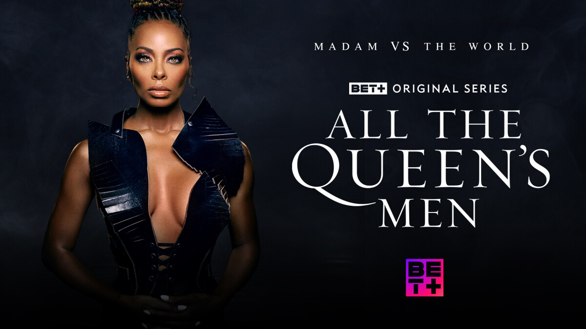
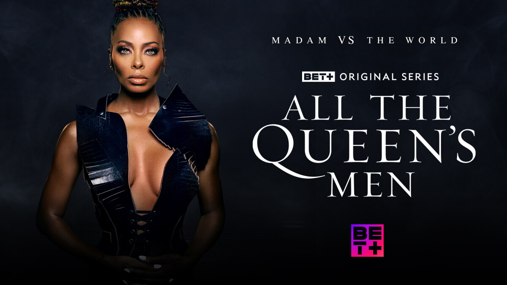

Collaborators, placements, and project highlights go here—update this blurb with the latest wins.
About

Music

Placements

Contact
Sticky Notes
Publishers
Samuel Witt aka "Sweet Sammy" crafts vibrant, story-driven tracks for games, films, and experiential media. Each project begins with a collaborative deep dive to define tone, instrumentation, and the emotional story the music needs to support.
Currently working in his studio creating tracks for music libraries, independant artists, and production companies.
Fed-Ex Courier by day, Sound Wrangler by night.
Native Texan
Keyboardist, Podcast Junkie, Girl-Dad, Husband (9 years)
Sam learned piano early and was the pianist for his pastors church at age 11.
His culture is a mix of Korean-American mixed with Mexican and his diet reflects this.
Sam fell in love with electric guitar at age 11 and started composing through highschool, winning 2nd and 3rd in national composition competitions in his junior and senior year.
Samuel's university training was completed at the esteemed music school University of North Texas where he graduated with a Degree in Jazz Piano Performance.
He learned Arranging, Theory, Conducting, and gigging extensively through his training and environment as he went on to play locally and tour abroad.
Being self-taugh in Music Production, Samuel has a firm foundation in recording software and mixing tecniques that pair well with his formal music training.
Spirituality has been a source of instruction as Samuel has always strived to serve the greater good through church music and support congregational enlightenments.
Samuel has developed his career by being kind, doing good work, and staying on the straight and narrow.
He's developed releationships with production companies, and publishers that stand the test of time.
Sam has enjoyed some success in the Reality TV sector of the music industry as he randomly sees his music being placed in shows he most likely would never watch.
Looking forward, Samuel looks to be a musical partner with someone who has an excellent message and vision that would benefit from a thoughtful piece of music to support it.
Collaborators, placements, and project highlights go here—update this blurb with the latest wins.
.png)
Swap in your latest collaborator notes or placement details for this Below Deck inspired collection.
If you like what you hear, please contact me and let me know! This is a great place to start. :p
Samuel's catalog is represented by select publishers and curated libraries for sync licensing. Browse the carousel to meet the partners stewarding his work.
For clearance details or custom requests, reach out via the contact window.

 

Samuel has worked alongside local Austin, TX artist App Juke on a versatile hip-hop track that gets placed in shows like Peacock’s Love Island USA alongside BET’s signature dramas Tyler Perry’s Sistas and All The Queen’s Men.
Samuel's track "Drawing Conclusions" [RETRO ELECTRONICA] has been featured in MTV's "The Challenge" during a prominent characters introduction scene.
Samuel wrote this track with help from Michael Botzaropoulos with arrangement and getting it signed.

Samuel recorded this track with his wife Amelia Love also in collaboration with Michael Botzaropoulos

"Get First Place" [HYPE HIP-HOP] was featured in a winner reveal scene in Netflix's "Stranded with My Mother-in-Law".


"Urbana Prolific" [CINEMATIC HIP-HOP] was featured in ATL Homicide.
Hi! I'de love to hear from YOU.
Include project scope, timeline, and any reference tracks when reaching out so Samuel can respond with tailored ideas and availability, pleeeease.